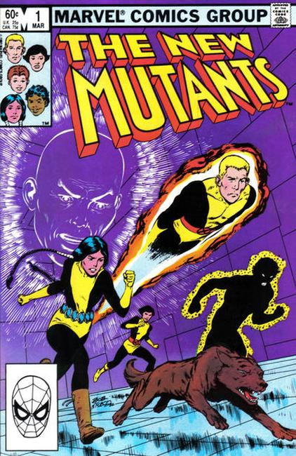
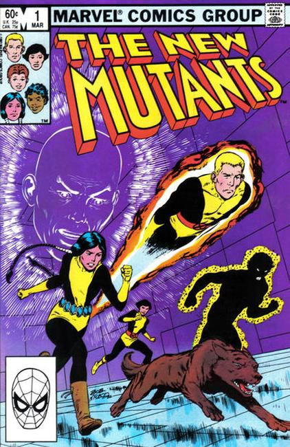

 The New Mutants are a group of teenaged mutant superheroes-in-training appearing in American comic books published by Marvel Comics. They have been the main characters of three successive comic book series, which were spin-offs of the X-Men franchise.
The first team of New Mutants characters was created by Chris Claremont and artist Bob McLeod. They first appeared in 1982's Marvel Graphic Novel #4 and are subsequently featured in their own title from 1983 until 1991. Like its parent title, The New Mutants highlighted interpersonal and group conflict as well as action and adventure, and featured a large ensemble cast. With the end of the first series, the characters were relaunched as X-Force in a new, eponymous series.
The second New Mutants series, launched in 2003, featured a new group of teenage mutants. Unlike the original New Mutants, they were part of a huge cast of students at the Xavier Institute. In 2004, it was relaunched as New X-Men: Academy X, after which the central group was formally dubbed the "New Mutants." In the aftermath of the "M-Day" crossover storyline in late 2005, the remaining students were merged into one junior team, the New X-Men.
The third New Mutants series, reuniting most of the original team, was launched in May 2009.
A New Mutants film was announced in May 2015.